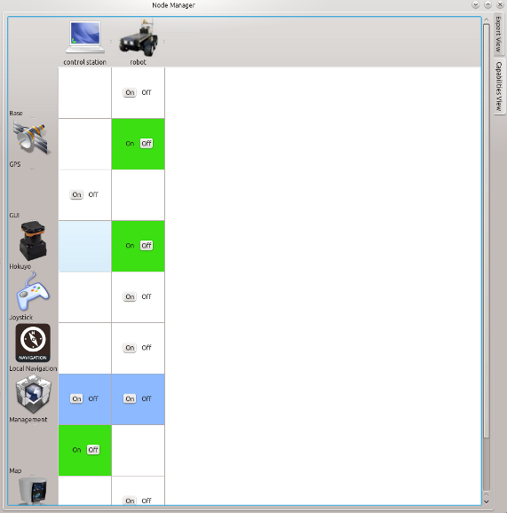

The Capability View shows tabularly the detected robots and their capabilities. The view is created based on the loaded configurations of corresponding robots. Each available capability provides buttons to start or stop these.

Click on the header to show the description in Description Dock.